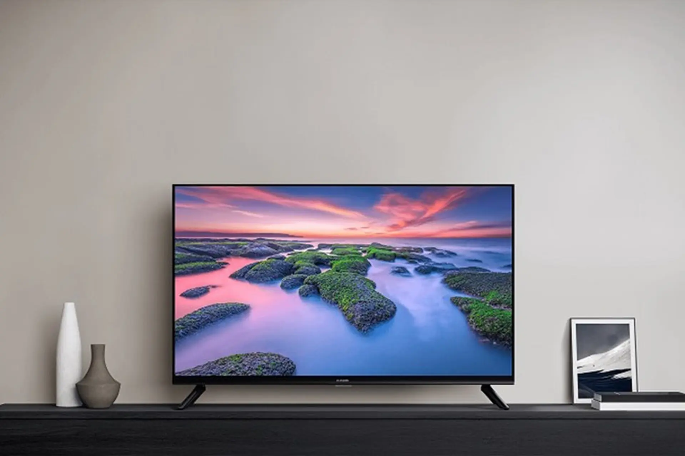
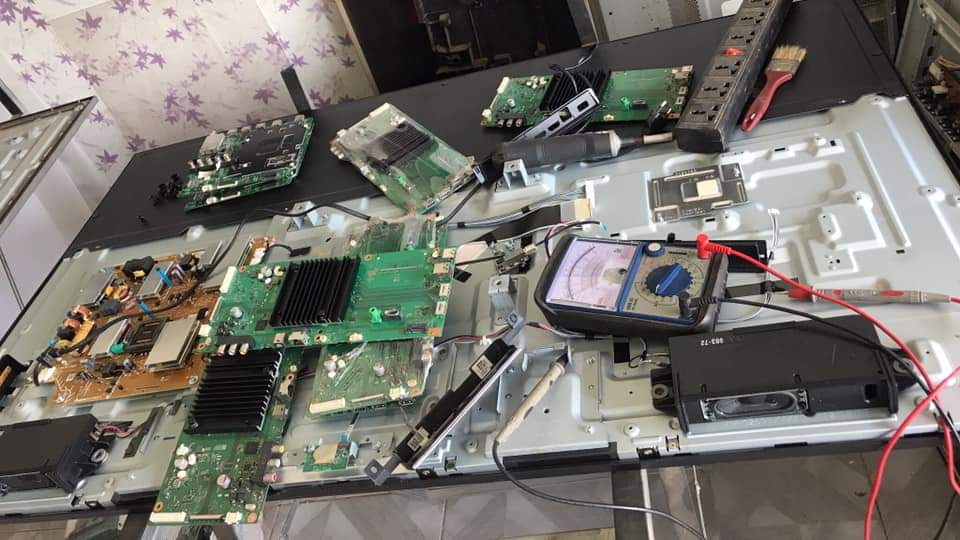

Tivi là trung tâm giải trí của gia đình. Khi thiết bị gặp sự cố như mất hình, mất tiếng, kẻ sọc màn hình hay không bắt được wifi, trải nghiệm của bạn sẽ bị gián đoạn hoàn toàn. Hơn nữa, việc tháo dỡ và vận chuyển những chiếc tivi màn hình lớn (55 - 85 inch) đến trung tâm bảo hành là cực kỳ rủi ro và cồng kềnh.
Thấu hiểu điều đó, Điện Lạnh Bách Khoa cung cấp dịch vụ sửa tivi tại nhà Hà Nội chuyên nghiệp. Đội ngũ kỹ thuật viên am hiểu sâu về điện tử sẽ đến tận nơi kiểm tra, chẩn đoán và khắc phục nhanh chóng các lỗi trên tivi Sony, Samsung, LG,...
📞 0559763681 - BẤM GỌI NGAY Hoặc Hotline: 0367274152Dù là tivi LED, OLED hay QLED, sau thời gian sử dụng đều có thể phát sinh các lỗi về bo mạch, LED nền hoặc panel màn hình. Hãy gọi thợ ngay nếu tivi nhà bạn gặp tình trạng:

Khắc phục các lỗi hiển thị, kẻ sọc màn hình, chết điểm ảnhChúng tôi trang bị đầy đủ máy móc (máy ép tab, máy đóng chip) và sẵn linh kiện chính hãng cho:

Đội ngũ thợ điện tử lành nghề, xử lý an toàn tại nhà khách hàngKhôi phục trải nghiệm giải trí - Bảo hành dài hạn
HOTLINE: 0559763681